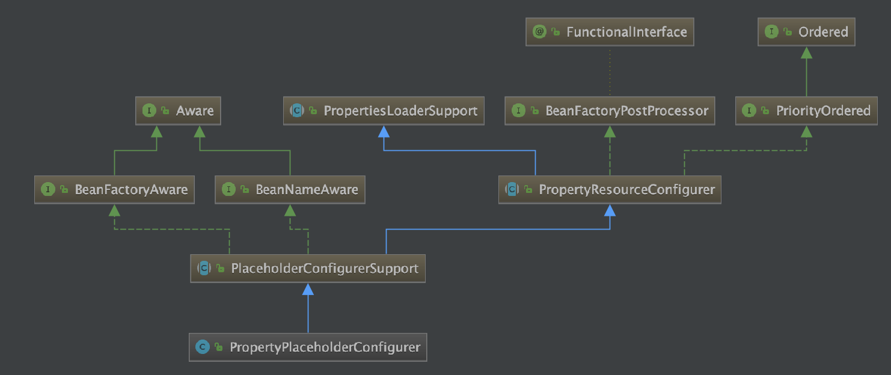
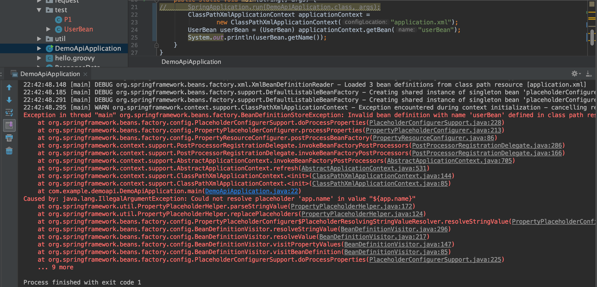
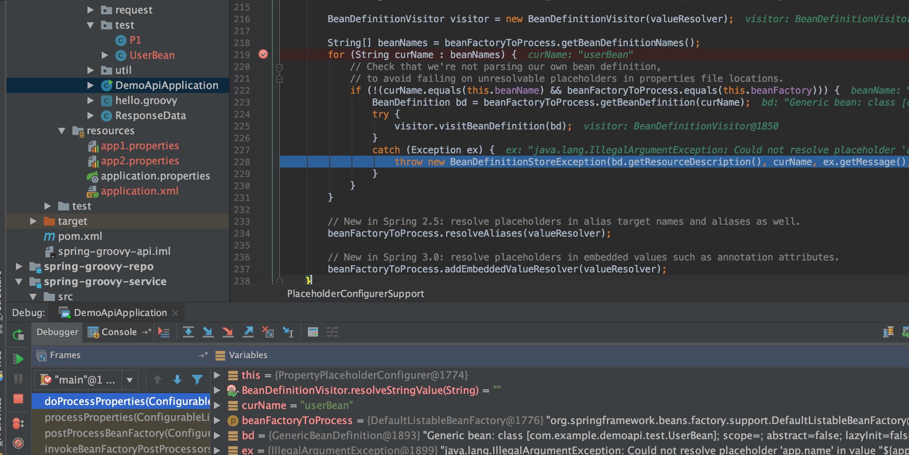
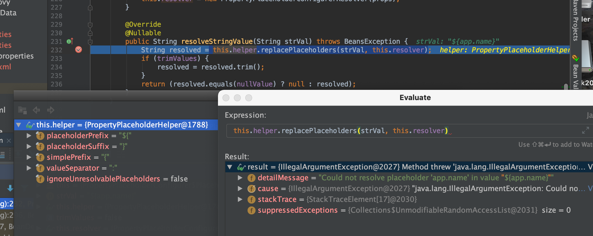
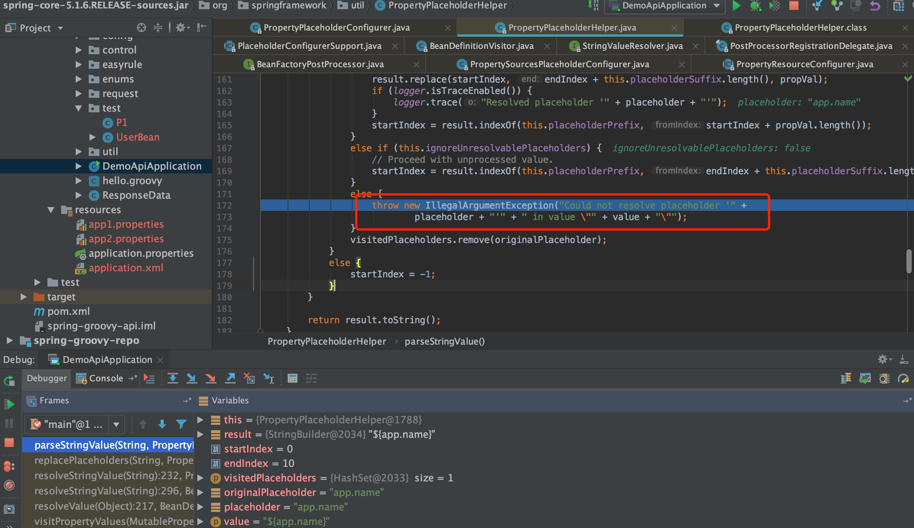
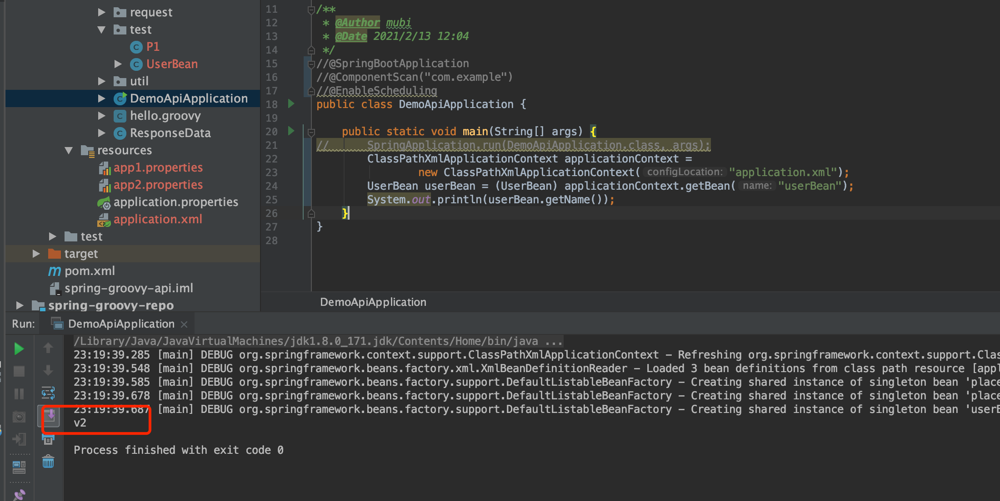
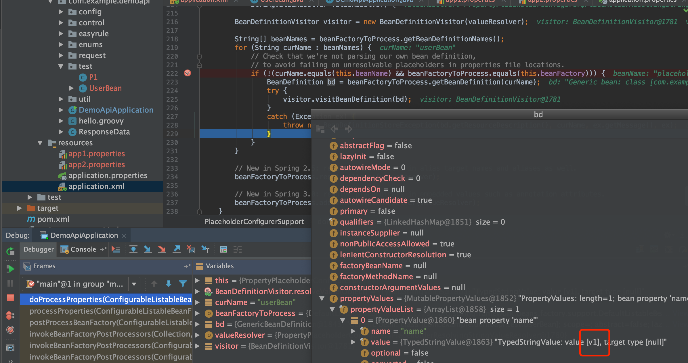
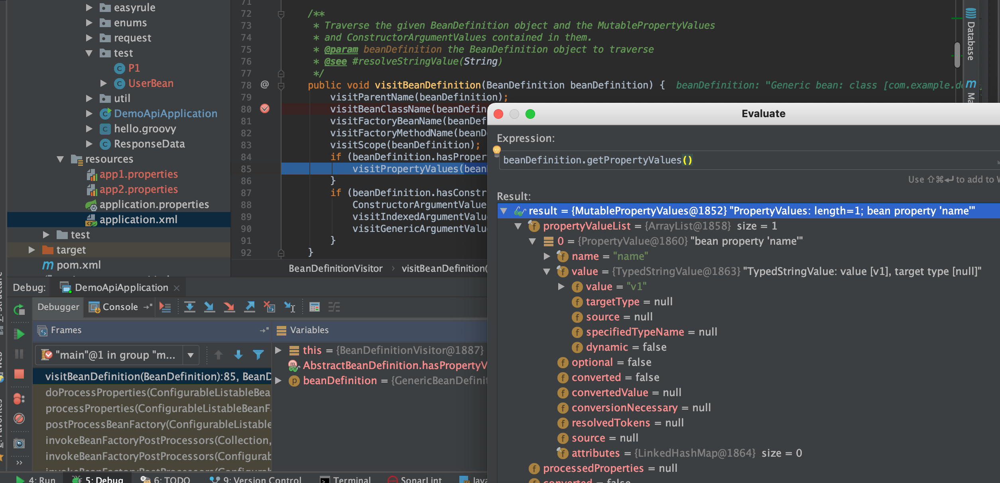
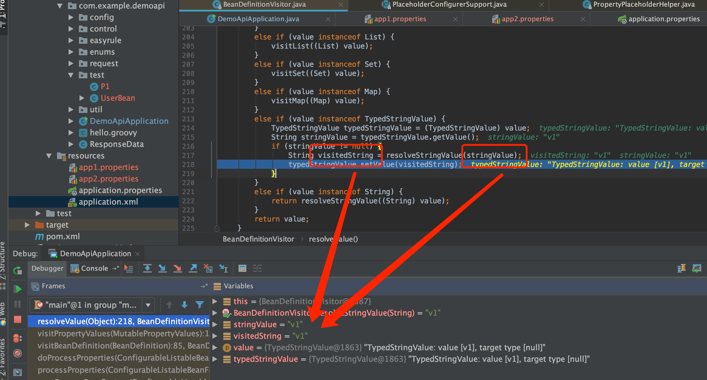
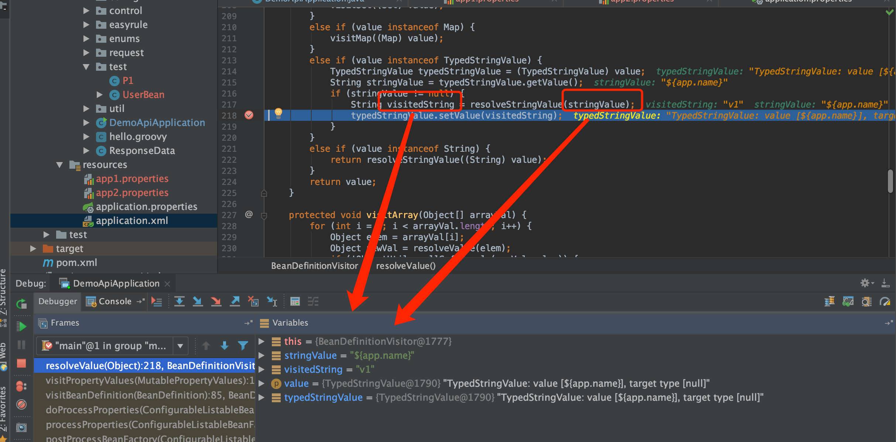

PropertyPlaceholderConfigurer
PropertyPlaceholderConfigurer的类图如下，可以看到其也是一个BeanFactoryPostProcessor

例子代码报错
public static void main(String[] args) {
ClassPathXmlApplicationContext applicationContext =
new ClassPathXmlApplicationContext("application.xml");
UserBean userBean = (UserBean) applicationContext.getBean("userBean");
System.out.println(userBean.getName());
}
<?xml version="1.0" encoding="UTF-8"?>
<beans xmlns="http://www.springframework.org/schema/beans"
xmlns:xsi="http://www.w3.org/2001/XMLSchema-instance"
xsi:schemaLocation="http://www.springframework.org/schema/beans https://www.springframework.org/schema/beans/spring-beans-3.0.xsd">
<bean id="placeholderConfigurer1" class="org.springframework.beans.factory.config.PropertyPlaceholderConfigurer">
<property name="order" value="1"/>
<property name="locations">
<list>
<value>classpath:app1.properties</value>
</list>
</property>
</bean>
<bean id="placeholderConfigurer2" class="org.springframework.beans.factory.config.PropertyPlaceholderConfigurer">
<property name="order" value="2"/>
<property name="locations">
<list>
<value>classpath:app2.properties</value>
</list>
</property>
</bean>
<bean name="userBean" class="com.example.demoapi.test.UserBean">
<property name="name" value="${app.name}"/>
</bean>
</beans>
app1.properties
#app.name=v1
app2.properties
app.name=v2
注意到app1.properties是注释掉的，执行后报错如下

追踪源码看报错
当执行org.springframework.context.support.PostProcessorRegistrationDelegate.invokeBeanFactoryPostProcessors()时可以看到有2个bfpp，一个是placeholderConfigurer1，一个是placeholderConfigurer2,这里先执行的是placeholderConfigurer1
bfpp的顺序问题？
回到：org.springframework.context.support.PostProcessorRegistrationDelegate.invokeBeanFactoryPostProcessors()的如下代码
// Separate between BeanFactoryPostProcessors that implement PriorityOrdered,
// Ordered, and the rest.
List<BeanFactoryPostProcessor> priorityOrderedPostProcessors = new ArrayList<>();
List<String> orderedPostProcessorNames = new ArrayList<>();
List<String> nonOrderedPostProcessorNames = new ArrayList<>();
for (String ppName : postProcessorNames) {
if (processedBeans.contains(ppName)) {
// skip - already processed in first phase above
}
else if (beanFactory.isTypeMatch(ppName, PriorityOrdered.class)) {
priorityOrderedPostProcessors.add(beanFactory.getBean(ppName, BeanFactoryPostProcessor.class));
}
else if (beanFactory.isTypeMatch(ppName, Ordered.class)) {
orderedPostProcessorNames.add(ppName);
}
else {
nonOrderedPostProcessorNames.add(ppName);
}
}
且注意到PropertyPlaceholderConfigurer是实现了PriorityOrdered的,我们也配置了顺序
执行到第一个placeholderConfigurer1找不到配置即报错？为什么不接着找placeholderConfigurer2
执行org.springframework.beans.factory.config.PropertyResourceConfigurer#postProcessBeanFactory
@Override
public void postProcessBeanFactory(ConfigurableListableBeanFactory beanFactory) throws BeansException {
try {
Properties mergedProps = mergeProperties();
// Convert the merged properties, if necessary.
convertProperties(mergedProps);
// Let the subclass process the properties.
processProperties(beanFactory, mergedProps);
}
catch (IOException ex) {
throw new BeanInitializationException("Could not load properties", ex);
}
}
mergedProp获取为空，在processProperties(beanFactory, mergedProps);这句报错了,进入到方法内部报错如下

placeholderConfigurer1的BeanDefinitionVisitor在解析${app.name}报错找不到

继续debug下去可以看到最后的报错位置如下，注意到ignoreUnresolvablePlaceholders=false，即【不忽略解析错误】是false, 可以看到如果是true就不会抛出异常了

根据debug分析尝试修改ignoreUnresolvablePlaceholders=true
<bean id="placeholderConfigurer1" class="org.springframework.beans.factory.config.PropertyPlaceholderConfigurer">
<property name="order" value="1"/>
<property name="ignoreUnresolvablePlaceholders" value="true"/>
<property name="locations">
<list>
<value>classpath:app1.properties</value>
</list>
</property>
</bean>
重新运行且成功拿到了配置2的值

多个配置覆盖问题
经过上一个报错，就会有个疑问，如果配置有多个且争取，那么到底最后会是哪一个？
实际执行是order更小的，即第一个bfpp能正常解析到的配置就是userBean的配置值
跟踪源码解释
placeholderConfigurer1正确执行后userBean的BeanDefinition已经正确赋值了${app.name}的值

当placeholderConfigurer2正确执行时：如下（可以理解为之前都解析好了，这次还解析个鬼）


附第一次解析对比：(如下，才是真正的解析)
